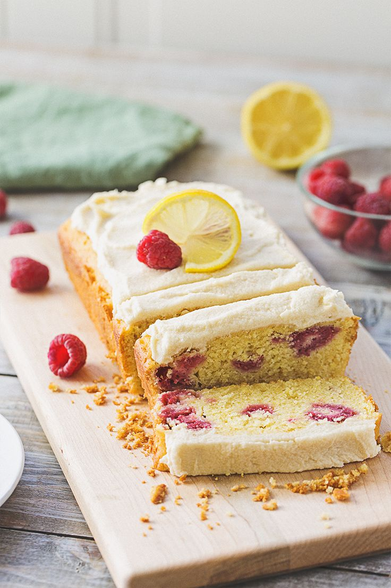

Raspberry Lemon Cake with Cream Cheese Frosting
You can't have breakfast without something sweet! This lightly sweetened cake has a lovely, balanced flavor of fresh raspberries and lemon.
Prep time: 15 minutes
Cook time: 40 minutes
Yield: 1 cake
Ingredients and Tools
For this recipe, you will need a sift, a 5 x 9in bread pan, a large mixing bowl, and a hand mixer. Ingredients are as follows:
2 cups flour
1 tsp baking powder
1 tsp baking soda
1/2 tsp salt
1/2 cup sugar
zest of 1 lemon
1/2 cup olive oil
1 1/2 tbsp water
1 cup plain yogurt
1 cup Plain So Delicious Dairy Free Coconut milk yogurt alternative
1/4 cup vegan butter, melter
1/4 cup butter, melted
2 tsp vanilla extract
1/4 cup lemon juice
1 cup raspberries
1 cup plain yogurt
1 cup Plain So Delicious Dairy Free Coconut milk yogurt alternative
3 1/2 sticks vegan butter, room temperature
3 1/2 sicks butter, room temperature
7 1/2 cups powdered sugar
Directions
For the cake:
Preheat the oven to 325 degrees
Grease and flour a 5 x 9 inch bread pan
Sift the flour to combine with baking powder, baking soda, salt, lemon zest and sugar
In a separate bowl, combine the water, olive oil, plain yogurt, vanilla extract, lemon juice and melted butter
Mix the dry and wet ingredients together to make a smooth batter. Gently fold in raspberries
Pour the mixture in the bread form and bake for 35-40 minutes or until a knife comes out clean. Carefully remove the cake from the pan and cool completely
For the frosting:
In a large mixing bowl, add the 3 1/2 sticks of butter , 2 cups of powdered sugar and half of the vanilla yogurt. Beat using a hand mixer until creamed and combined
Add in an additional 2 cups of powdered sugar and beat to incorporate
Add remaining yogurt and another 2 cups powdered sugar. Beat to combine
Add additional powdered sugar 1/2 cup at a time until the desired consistency is reached. It should be between 7 and 8 cups total
Spread the frosting over the cooled caked and garnish with raspberries if desired
Slice the cake to serve. Be sure to wrap with plastic wrap to store when finished so the cake remains moist
Figure: Raspberry Lemon Cake with Cream Cheese Frosting
